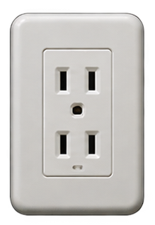
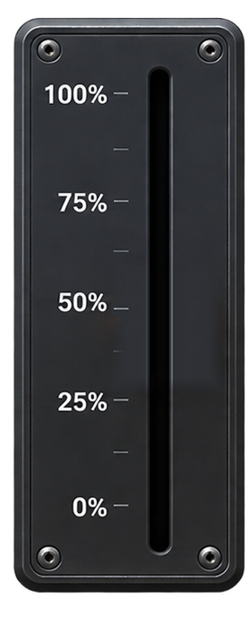
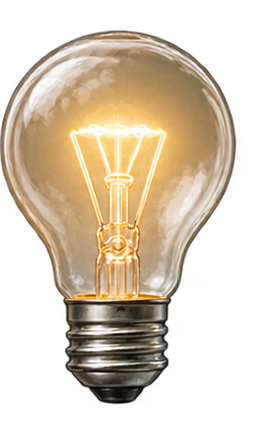

DIMMING / 制御の入口
制御とは？ ― 同じフェーダー、違う伝え方。
フェーダーを動かして、何が伝わるのかを確かめよう。
ここで学ぶこと： フェーダーの動きが機械へ伝わる、100Vの電力を扱う、0〜10Vの信号を扱う、位置をデジタルの数値にする。操作の違いを比べます。
① 入力を見る

コンセント・プラグ
AC100Vの電源がフェーダーへ
② フェーダーを動かす

100V系の電気を扱う
③ 灯りを見る

電球の明るさ
フェーダーで操作すると、電球の明るさが変わります。
▤ 制御の歴史と位置づけ
機械的な操作から、強電・弱電による操作、さらにデジタルによる指示へ。フェーダーの役割に注目して比べよう。

先生のひとこと
同じフェーダーでも、そこで扱うものが違うんだよ。強電では100Vの電気を扱っているよ。
※教育用の概念図です。実機の内部回路・配線を再現したものではありません。灯りの明るさはイメージです。商用電源を使った配線実験は行わないでください。